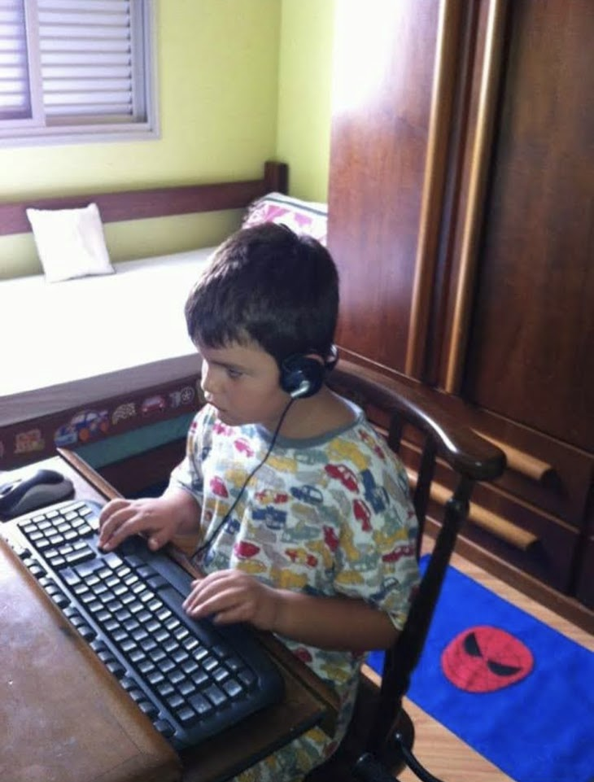
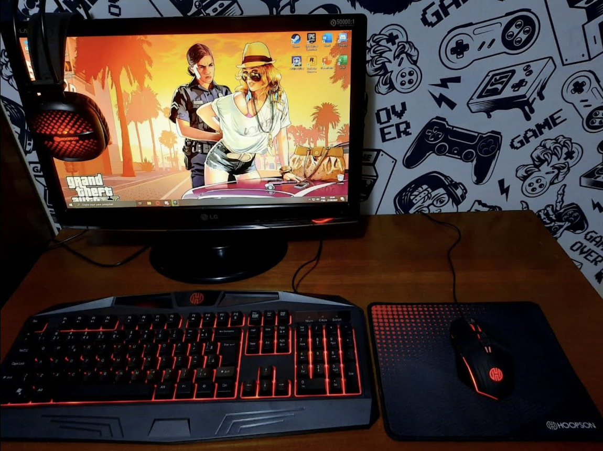
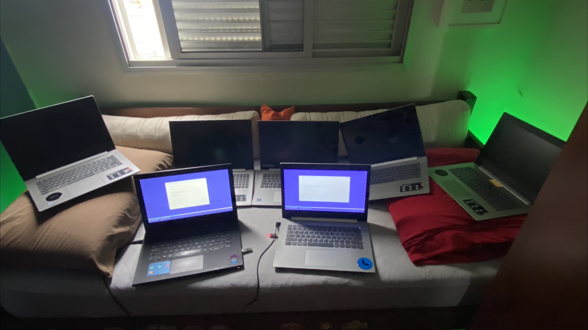
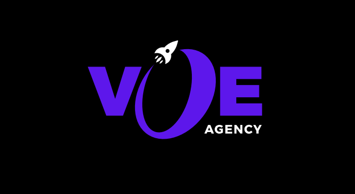
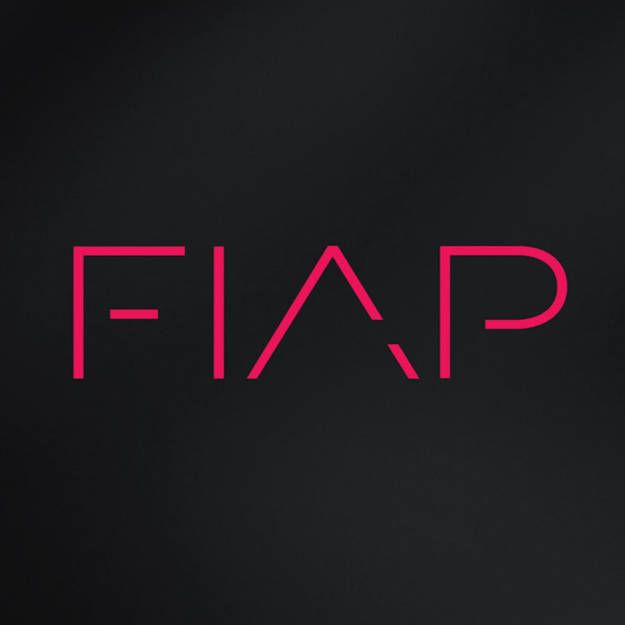

2011
Primeiro contato com computadores

Em 2011, com 5 anos de idade, eu tive os meus primeiros contatos com a
computação, sempre fui muito curioso e fuçava cada funcionalidade
disponível no computador. Meu pai foi um grande exemplo para me
motivar a seguir na área da computação, ele era formado em Ciência da
Computação, em alguma universidade feita nos Estados Unidos. O meu
objetivo na época, era conseguir saber de tanta coisa como ele! Talvez
hoje, eu possa dizer que tenho um fio da sabedoria que ele tinha.
16 de Fevereiro de 2020
A primeira montagem ninguém esquece

Me desculpem pela foto mas era a única que eu tinha salva para me
recordar daquele momento, em tempos de pandemia, eu estava acostumado
a usar um Notebook bem velho da Lenovo, foi quando eu comecei a me
interessar pelos computadores, eu queria fazer de tudo para otimizar
aquele Notebook e deixa-lo o mais rápido possível. Foi assim então,
que eu comecei a enfrentar os meus desafios. Sempre fui autodidata,
nunca fiz curso, mas sempre resolvi os meus problemas! Quando percebi,
já estava montando o meu primeiro PC Gamer, que por sinal, foi a
melhor decisão que já tomei na minha vida.
Março de 2020
Jornada do zero à primeira vaga

Ainda em pandemia, eu precisava ajudar minha mãe, foi quando comecei a
utilizar meu conhecimento para gerar lucro. Fiquei conhecido em toda a
região do meu bairro, grupos de Facebook, condomínios, e outros
lugares. Simplesmente comecei a fazer mais de 1.000,00 por mês com 14
anos de idade. Todos precisavam de um computador ou notebook para
trabalhar Home Office, eu aproveitei a necessidade das pessoas e
solucionei o problema delas.
6 de Dezembro de 2021
Primeira vaga na área de TI
Com 15 anos, arrumei meu primeiro emprego na área de TI. Como jovem
aprendiz, onde minha primeira impressão foi exatamente "meu deus, que
fod@". Fiquei encantado ao perceber que iria trabalhar com pessoas da
área que sou apaixonado, e o mais impressionante ainda foi entrar com
15 anos de idade naquele setor. E até hoje, eu com 17 anos de idade
continuo trabalhando lá meio período.
6 de Janeiro de 2023
Fundação da minha empresa

Confesso que no meio da minha jornada, eu me desanimei um pouco da
programação. Mas não fiquei parado, comecei a estudar marketing
digital, vendas, comunicação, persuasão, etc. Eu fiquei mais de 6
horas por dia estudando, vi um potencial de crescimento muito forte na
área. Então, depois de conhecer as pessoas certas, com os mesmo
objetivos de vida, fundei minha agência de Marketing Digital com 2
sócios, o Enzo Segatto e o João Lombardi. Fico feliz em dizer que a
agência está indo muito bem! Com um crescimento exponencial absurdo, e
é apenas o começo.
2 de Fevereiro de 2023
Bacharelado em Engenharia de Software

Com o meu trabalho fixo atual, minha empresa crescendo cada vez mais,
também comecei a minha graduação de Engenharia de Software na
universidade FIAP. A Engenharia de Software é uma área que sou
extremamente apaixonado, e não importa qual seja o motivo, jamais vou
larga-lá. Hoje eu me dedico frequentemente nos estudos da área, sempre
estou em busca de novos conhecimentos. Faço aplicações de Eng. de
Software diárias tanto na minha empresa quando na empresa que sou
contratado. Acredito que uma coisa não impede a outra, basta saber
equilibrar o tempo. Quem domina essa técnica, sempre estará a frente
dos concorrentes.